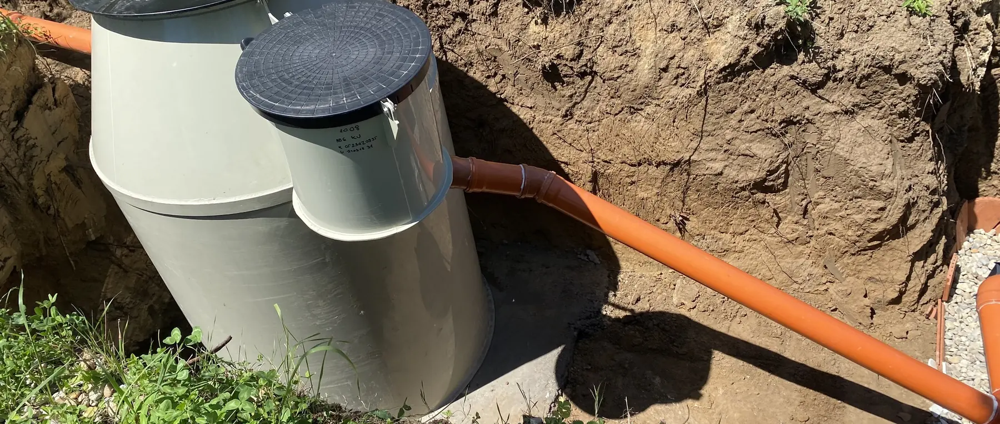

Meglévő emésztőt szeretnék kiváltani
A kiváltás akkor jó döntés, ha a felmérés is alátámasztja. Van, amikor a régi rendszer még évekig üzemeltethető, és van, amikor a csere évek óta halasztott, elkerülhetetlen lépés. Ezen az oldalon végigvesszük, mi alapján lehet ezt eldönteni — a szippantási számlán túl.

Döntés
Mikor indokolt a csere?
A csere mellett szól, ha…
- a szippantás gyakorisága nő, vagy a költsége már összemérhető egy beruházás törlesztésével;
- a rendszer szagol, visszaduzzad vagy elfolyik — ezek nem üzemeltetési apróságok, hanem szerkezeti vagy kapacitásbeli problémára utalnak;
- az emésztő szikkasztó kialakítású, tehát a kezeletlen szennyvíz a talajba jut — ez ma a legtöbb helyen nem tartható állapot;
- bővítés vagy felújítás készül, és a terhelés növekedni fog;
- a betonszerkezet elöregedett: repedés, süllyedés, beomlott fedlap.
Nem sürgős a csere, ha…
- a rendszer zárt és ép, és az ürítési gyakoriság évek óta egyenletes;
- a közcsatorna kiépítése ütemezett, és a bekötés belátható időn belül megtörténik;
- az ingatlant ritkán használják, és a terhelés töredéke az állandó lakhatásénak;
- a probléma egyetlen elemre szűkíthető — például a fedlapra vagy a bekötővezetékre —, mert akkor javítás is elég lehet.
Fogalmak
Emésztő, oldómedence vagy biológiai rendszer?
A három nem ugyanannak a dolognak három változata. Más a működésük, más a kimenetük, és más feltételekhez kötöttek.
-
Emésztő (zárt tároló). Nem kezel, csak gyűjt. A szennyvíz teljes mennyiségét el kell szállíttatni, így az üzemeltetési költség a vízfogyasztással arányosan nő. A régi, szikkasztó kialakítású emésztők ráadásul a kezeletlen szennyvizet a talajba engedik.
-
Oldómedence szikkasztással. Mechanikai előkezelést végez, majd a részben tisztított víz szikkasztómezőre kerül. Áram nem kell hozzá, de a talaj vízáteresztő képessége és a talajvízszint korlátozza, és a szikkasztómező jelentős területet igényel.
-
Biológiai szennyvíztisztító berendezés. A szennyvizet ténylegesen megtisztítja, a kezelt víz elhelyezése így lényegesen kisebb területen megoldható, és kedvező esetben hasznosítható is. Áramigénye van, és rendszeres — de kis munkaigényű — üzemeltetést kíván.
Költség
Teljes költség és megtérülés
A két megoldás csak akkor hasonlítható össze, ha mindkettőnél a teljes költséget nézzük. A meglévő emésztőnél ez elsősorban a rendszeres szippantás díja, amely a háztartás vízfogyasztásával együtt nő, és a szolgáltatói díjakkal együtt emelkedik.
A biológiai rendszernél a beruházási költség mellett az áramfogyasztás, az időszakos iszapelszállítás és a karbantartás jelenik meg — ezek együtt jelentősen alacsonyabbak a folyamatos szippantásnál, de nem nulla tételek. A megtérülés ezért nem általánosan, hanem a konkrét háztartás fogyasztási adataiból számolható.
A beruházási oldalon a berendezés ára gyakran nem a legnagyobb tétel: a földmunka, a bekötés mélysége, a régi emésztő megszüntetése és a kezelt víz elhelyezésének módja együtt jelentősen mozgatja a végösszeget. Ezért adunk sávot ajánlat helyett, amíg nem volt felmérés.
Felmérés
A meglévő rendszer felmérése
A csere előtt a régi rendszert is meg kell nézni — nemcsak azért, hogy kiderüljön, indokolt-e, hanem mert a megszüntetése is a projekt része.
-
A meglévő műtárgy típusa és állapota. Zárt vagy szikkasztó kialakítású, milyen anyagból van, ép-e a szerkezet, és milyen mély.
-
A tényleges terhelés. A vízfogyasztási adatok és a szippantási gyakoriság együtt megmutatja, mekkora kapacitásra van valójában szükség.
-
A bekötővezeték nyomvonala és mélysége. Ez dönti el, hogy az új berendezés a régi helyére kerülhet-e, vagy szükség van-e átemelőre.
-
A régi emésztő sorsa. A megszüntetés módja — kiürítés, esetleg betömedékelés vagy elbontás — engedélyezési kérdés is, és költségtétel.
-
A kezelt víz elhelyezése. Az új rendszer kimenetét el kell tudni helyezni; ez a felmérés legfontosabb pontja, mert enélkül a csere nem tervezhető.
Gyakori kérdések
Amit a leggyakrabban kérdeznek
Az új berendezés a régi emésztő helyére kerülhet?
Néha igen, de ez nem alapeset. A régi műtárgy mérete, mélysége és állapota, valamint a bekötővezeték nyomvonala dönti el. A felmérésen ezt konkrétan megnézzük, mert a válasz jelentősen befolyásolja a földmunka költségét.
Mi lesz a régi emésztővel?
Ki kell üríteni, és a további sorsáról — betömedékelés vagy elbontás — a helyi előírások és a telepítés adottságai döntenek. Ez a projekt része és költségtétel, ezért az ajánlatban külön szerepel.
Mennyi ideig tart a csere, és lakható-e közben az ingatlan?
A telepítés maga általában néhány nap. Az ingatlan használata rövid ideig korlátozott, elsősorban a bekötés átvezetése alatt. A pontos ütemtervet a felmérés után adjuk meg, mert a földmunka mennyisége határozza meg.